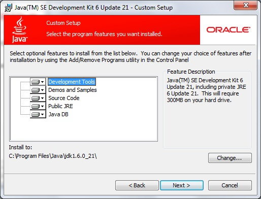
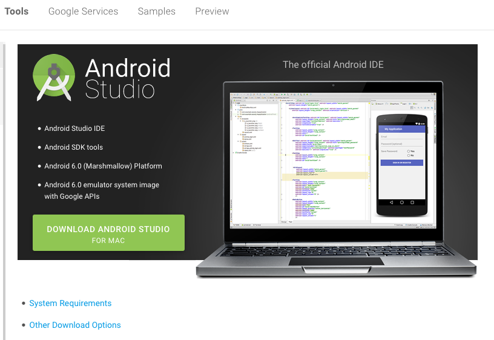
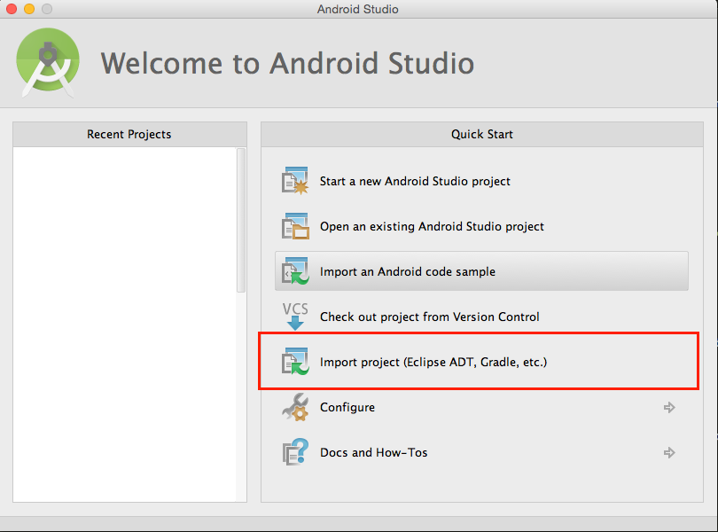

“StoreFinder Android Full Application” Documentation by “MGAppcelerator”
“StoreFinder Android Full Application”
Created: 06/01/2016
Updated: 06/01/2016
By: MGAppcelerator
Email: mangasaurgames@gmail.com
Thank you for purchasing my application. If you have any questions that are beyond the scope of this help file, please feel free to email via my user page contact form here. Thanks so much!
Table of Contents
A) Installation - top
Before you begin interacting the project, you need to install the following. Follow the Instructions in installing and you will be good in no time.
- JDK - Select the appropriate platform according to your OS Architecture i.e 32bit, 64bit
- Android SDK - Select the appropriate platform according to your OS Architecture i.e 32bit, 64bit
Step 1
Install first the JDK, you must download the correct architecture because some problems might occur upon running the IDE. Any Install location will do as long as the folder isnt locked or restricted access for writing.
Step 2
Download and Extract the Android Studio, you can download it here
Step 3
Go to the downloaded DMG or EXE file and begin installing it. Please wait as it takes time to install depending on your hardware requirements.
Step 4
Once finish installing open the Android Studio by finding it in the Spotlight. You can drag the Icon and put in your dock to create shortcut.

B) Importing the StoreFinder Application - top
Step 1
In Android Studio Welcome Screen, SELECT Import Project (Eclipse ADT, Gradle, etc.)
Step 2
Locate the Item Finder Folder, this may differ according to where did you store the project folder
You will notice that the Folder have and Android Studio icon instead of a folder icon. That means, you are in GOOD SHAPE!
After selecting it press OK button.

Step 3
Wait for it to finish updating the gradle files to adapt on your environment and system settings. This may take few minutes so PATIENCE is a MUST.
Step 4
You will encounter this during import. Just simply press OK button

Step 5
Since it is the first time you installed the Android Studio, it is natural that it wont run without having an errors.
You will noticed this message logged below stating that you need to install missing platforms. Click the link and follow the installation. wait for it to finish. And you are good to go.

Step 6
Wait for it to finish syncing and you are good to go. PLEASE CONSIDER USING A REAL DEVICE. Real device are the physical product that your app used to run not EMULATORS. EMULATORS have some missing SDK and will definitely crash the app.
C) Sources and Credits - top
We've used the following Libraries/Tools as listed:
- Android Studio
- JDK 6/7
Once again, thank you so much for purchasing this theme. As I said at the beginning, I'd be glad to help you if you have any questions relating to this item. No guarantees, but I'll do my best to assist. If you have a more general question relating to the application on CodeCanyon, you might consider visiting the forums and asking your question in the "Item Discussion" section.
MGAppcelerator